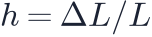
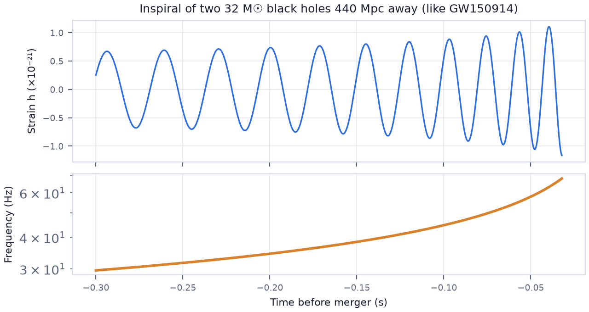
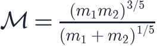
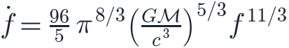
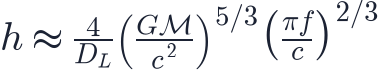

In this lesson you will learn
|
Ripples in spacetime
General relativity predicts that accelerating masses create gravitational waves: ripples in the metric of spacetime that travel at the speed of light. As a wave passes, it stretches space in one direction and squeezes it in the perpendicular direction, then swaps.
The effect is described by the strain

, the fractional change in the length of a ruler. Even from the most violent events it is tiny: about at Earth, like changing the distance to the nearest star by the width of a human hair.A century-long search Einstein predicted gravitational waves in 1916 but doubted they could ever be detected. In 1974 Russell Hulse and Joseph Taylor discovered a binary pulsar whose orbit shrinks exactly as gravitational-wave emission predicts (Nobel Prize 1993). Direct detection had to wait another four decades. |
Laser interferometers
LIGO, Virgo and KAGRA are L-shaped laser interferometers with arms several kilometres long. A laser beam is split, sent along both arms, reflected by mirrors and recombined. A passing wave changes the arm lengths in opposite ways and shifts the interference pattern. LIGO's 4 km arms are sensitive to length changes of m, a ten-thousandth of a proton diameter.
GW150914: the first detection
On 14 September 2015 both LIGO detectors recorded a signal lasting a fifth of a second. It came from two black holes of about 36 and 29 solar masses spiralling together about 1.3 billion light-years away. In the final fraction of a second, about three solar masses were converted into gravitational-wave energy, more power than all the stars in the observable universe combined. Rainer Weiss, Barry Barish and Kip Thorne received the 2017 Nobel Prize.
The chirp
As two compact objects orbit each other, they lose energy to gravitational waves, move closer and orbit faster. The wave frequency (twice the orbital frequency) and amplitude both rise: a chirp.

To leading order the rate at which the frequency sweeps up depends on a single combination of the masses, the chirp mass


and the strain amplitude is

Standard sirens Measuring how quickly the frequency increases gives the chirp mass. With the mass known, the measured amplitude gives the luminosity distance directly, from general relativity alone, with no calibration by Cepheids or supernovae. Bernard Schutz pointed this out in 1986; by analogy with standard candles, such sources are called standard sirens. |
GW170817: a siren with a flash
On 17 August 2017 LIGO and Virgo detected two neutron stars merging about 40 Mpc (130 million light-years) away. 1.7 seconds later the Fermi satellite recorded a gamma-ray burst from the same part of the sky, and within hours telescopes found a new source, a kilonova, in the galaxy NGC 4993.
This single event achieved several firsts:
- Speed of gravity: after a journey of 130 million years, gravitational waves and light
arrived within 1.7 s of each other. Their speeds agree to about one part in
 .
. - Heavy elements: the kilonova spectrum showed freshly made heavy elements, confirming neutron star mergers as a major source of gold and platinum.
- Hubble constant: the siren distance combined with the recession velocity of NGC 4993 gave
A siren in numbers With a distance of about 43.8 Mpc and a Hubble-flow velocity of about 3 017 km/s for NGC 4993, km/s/Mpc. The large uncertainty comes mainly from not knowing the inclination of the orbit, which also affects the amplitude. |
Try it: Cosmology Calculator Find the redshift whose luminosity distance is 43.8 Mpc for Planck 2018 parameters, and compare cz with the recession velocity above. |
Sirens and the Hubble tension
One siren gives a rough ; about 50–100 well-localised events with identified host galaxies could reach a precision of a few percent. Because sirens are calibrated by general relativity itself, they offer an independent judge in the Hubble tension (lesson L6.6). Sirens without a visible counterpart ("dark sirens") can also be used statistically with galaxy catalogues.
Testing gravity
Gravitational waves test general relativity in the strong-field regime and on cosmological scales. The GW170817 speed measurement alone ruled out many modified-gravity theories proposed as alternatives to dark energy, which predicted that gravitational waves would travel at a different speed from light (lesson L6.7).
Other frequencies, other sources
| Band | Frequency | Detectors | Sources |
|---|---|---|---|
| Audio | 10–1000 Hz | LIGO, Virgo, KAGRA; future Einstein Telescope, Cosmic Explorer | stellar-mass black holes and neutron stars |
| Millihertz | – Hz | LISA (space, planned for the 2030s) | supermassive black hole mergers |
| Nanohertz | – Hz | pulsar timing arrays (NANOGrav, EPTA, PPTA) | background from supermassive black hole binaries |
| Ultra-low | Hz | CMB B-mode polarisation | primordial waves from inflation |
In 2023 pulsar timing arrays reported evidence for a nanohertz gravitational-wave background, most likely from merging supermassive black holes across the universe. Primordial waves from inflation (lesson L6.3) remain undetected.
Remember this
|